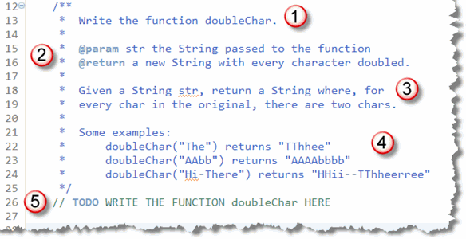
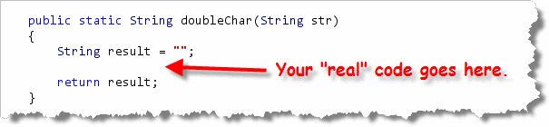

Chapter 3 in your textbook taught you how to make
decisions, while Chapter 4 will introduce you to the concept
of iteration, or repeating different actions. Using
Java's for loop, we can use that technique to
write functions that produce different kinds of String
patterns.
In this assignment, we want to marry those two concepts together,
and learn how to write functions that process
Strings and numbers using the for loop.
These are similar to the problems you'll see on your CS 170 programming proficiency quizzes.
Time to Double Down
To do that, open DoubleChar.java from this week's
starter folder in DrJava. Once you have it open,
you'll find the documentation for this problem:

As before you have:- The name of the function you need to write.
- The Javadoc parameters and return type.
- A short "problem statement".
- Some examples.
- A comment you should replace with the actual function.
Before you start typing, though, let's take a look at some basic strategy. You'll normally want to attack these kinds of problems using the same general strategy. Here's how I do that.
Step 1: Skeleton and Return Type
Even though all of these simple loop problems process
Strings, they don't necessarily return
String values. Some will, but others will return
int or boolean values.
My first step (after I've written the header, of course), is to
always to create an "empty" variable of the
correct type and then add a return statement, so that I can
run the program and see what the tests do. Here's what you'd
do for doubleChar():

Step 2: Loop through the String
These problems all require the use of loops.
Because you can easily find the length of the String,
you'll almost always use the for loop. Here's the
general pattern that I follow, even before I give any thought
to what my code is actually going to do:

Step 3: What's the Goal?
Now we're ready to look at what the output should be. In this case, we want our output to contain two characters for each character in input.
In general, if you want to examine every character, you can do it like this:
char ch = str.charAt(i);
or, you can do it like this:
String chStr = str.subString(i, i + 1);
The first technique gives you back a char
variable which is easy to compare using the various
relational operators. You'll have to use the second
technique if you need to process more than one character
on each repetition.
In this case, we can go either way. We need to grab each
character and then "paste" that character onto the output
String two times to double it. Here's a version
using charAt():

Notice that you need to concatenate the characters with the
String output, not add the two characters
together and concatenate that. Concatenation works with
Strings, not characters. If you were to
write this:
result += c + c;
then the two characters would be added as Unicode characters and
the resulting numeric value would be pasted onto the
end of your String.
Here's a version of the same loop, using the substring()
method instead of charAt():
 Note that because the variable
Note that because the variable cStr is a String
rather than a char, you can use the shorthand
assignment operator in this instance.